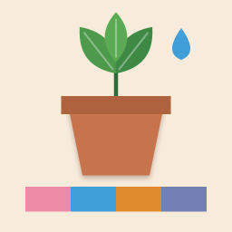

季節ごとの間かくが分かる水やり記録
夏は4日、冬は12日。鉢ごとに、あなたの間かくで。
鉢（植物）を入れ、水をやったら「やった」を押すだけの記録です。記録から、鉢ごとに春・夏・秋・冬のいつもの間かくを出し、次の日をいまの季節の間かくで出します。
- 季節ごとの間かく。続けて水をやった2つの日の差を、季節（春 3〜5月・夏 6〜8月・秋 9〜11月・冬 12〜2月）ごとに平均します
- 次の日。前にやった日＋いまの季節の間かく。記録がなければ全部の平均か、はじめに決めた日数
- 遅れている順。「◯日すぎ」の鉢が上に来ます
- 前にやった日を足す・消す。通知はしません
- 登録・課金はありません。記録はこの端末の中だけに保存します。画面のいちばん下に小さな広告が出ます